What are modules?
Modules provide functionality that can be used to enhance the images created by AllSky, modules can also provide functionality that does not affect the images but more on that later. The Module Manager allows you to control which modules are run and when they are run.
There are two types of modules
- System Modules - These are developed and maintained by the AllSky team. These modules are installed with the main AllSky installer
- User Modules - These are developed and maintained by people outside of the AllSky development team. These modules are installed via a seperate installer, See LINK. These modules can be deleted if no longer required
User Modules User modules must only be installed from the official AllSky repositories. Installing modules from other source could be dangerous and is not encouraged.
Experimental Modules When installed some modules will display a warning that they are experimental. Before using any of these modules you should ensure that you are proficient in analysing Linux Logs files. They should be considered unstable and as such may 'break' your AllSky installation. In the Module Manager settings you can enable/disable experimental modules
Hardware Dependent Modules Some modules are designed to operate with external hardware, typically connected to the Pi's GPIO pins. Before attempting to use any of these modules you should ensure you have an understanding of interfacing hardware to the PI's GPIO
Please don't be discouraged by the above warnings. The module system provides a very flexible system allowing you to customise the AllSky software to your requirements without having to change any code
Module Flows
Modules run in several places, for each of them you can define which modules run and the order they are run in. The two areas the modules run in are;
- Via the capture process
- Day - These are run after every day time image is captured
- Night - These are run after every night time image is captured
- End Of Night - These are run at the end of the night
- Via a CRON system - These are run periodically, each modules defines the frequency with which it runs
The diagram below shows each stage of the capture process and how modules fit into it.
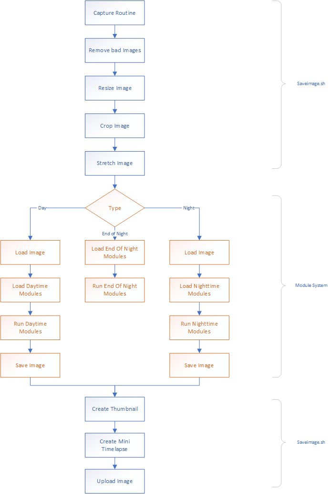The 'Module Manager'
The Module Manager is the main interface for managing all of the available modules and in which flows they are used.

| Annotation | Description |
|---|---|
| 1 - Save | This will be enabled when any changes have been made |
| 2 - Upload | This will allow you to upload a zip file containing a new or updated module. Please see the section on adding and updating modules for more details on how to use this feature |
| 3 - Flow | The flow you wish to manage. If you have un saved changes from the current flow you will be prompted to save them before switching |
| 3 - Flow | The flow you wish to manage. If you have un saved changes from the current flow you will be prompted to save them before switching |
| 4 - Settings | Displays the settings dialog for the Module Manager |
| 5 - Debug | Displays the debug data for modules. This icon is only visible if its been enabled in the settings |
| 6 - Available | These are the available modules for the selected Flow |
| 7 - Enabled | These are the modules to be run in the selected Flow. They will only be run if the enabled checkbox is selected Modules displayed in red are fixed and cannot be moved |
Selecting a flow
From the drop down list select the flow that you wish to amend. If there are unsaved changes for the current flow then you will be prompted to save them before switching to a new flow.
Enabling a module
To enable a module drag it from the Available column to the Enabled column. The module will becoma active after the flow has been saved.
Most modules will require some configuration. Modules can only be configured after they have been moved to the Enabled column, clicking the settings button will display any configuration options for the module
Don't forget to ensure the enabled checkbox is selected otherwise the module will not run. You can set modules to be automatically enabled when dragging them to the enabled column by setting the appropriate options in the module editor settings
Disabling a Module
There are two ways to disable a module
- Drag the module to the Available column - This will disbale the module and lose any settings for it
- Uncheck the enable checkbox - This will diable the module but retain any settings. This is the preferred method if you just wish to temporarily disable a module
Setting the Module execution order
The modules will be run in the order they appear in the Enabled column. To change the order simply drag the modules up or down the list.
It is not possible to move any modules displayed in red
Modules
Core Modules
The Core Modules are installed along with the main AllSky installer. The available modules are
| Module | Available In | Description |
|---|---|---|
| Load Image |
|
Loads the last image taken by AllSky. This is always the first module that is run during the daytime and nighttime capture to ensure that the image is available to all subsequent modules |
| Save Image |
|
Saves the final image after all of the modules have run. This is always the last module that is run during the daytime and nighttime capture |
| Save intermediate Image |
|
This module saves a copy of the image to the specified folder. This is useful to save a copy of the image at a certain point in the flow for later processing. For example if you wish to create a timelapse without any of the overlay information on it simply add this module before the overlay module. Note: You will have to write any scripts to process these images |
| Mask Image |
|
This applies a mask to the image. This can be useful if there are artefacts outside of the image circle that you wish to remove. Create a mask with white in the areas you wish to keep and black in the areas you wish to be black, see the section on creating and using masks |
| Clear Sky |
|
This attempts to work out if the sky is clear. It does this by counting the stars in a Region of Interest (ROI) and if this is above a threshold the sky is assumed to be clear. The modules settings allow you to specify the ROI on the image and the parameters for detecting stars. If required the current calculated sky state can be sent to an MQTT broker. Certain other modules can also use the results of this module. For example the Star Count module can be set to only run if the sky is clear, as determined by this module. It is recommended to run this module early in the flow, generally after the mask module |
| 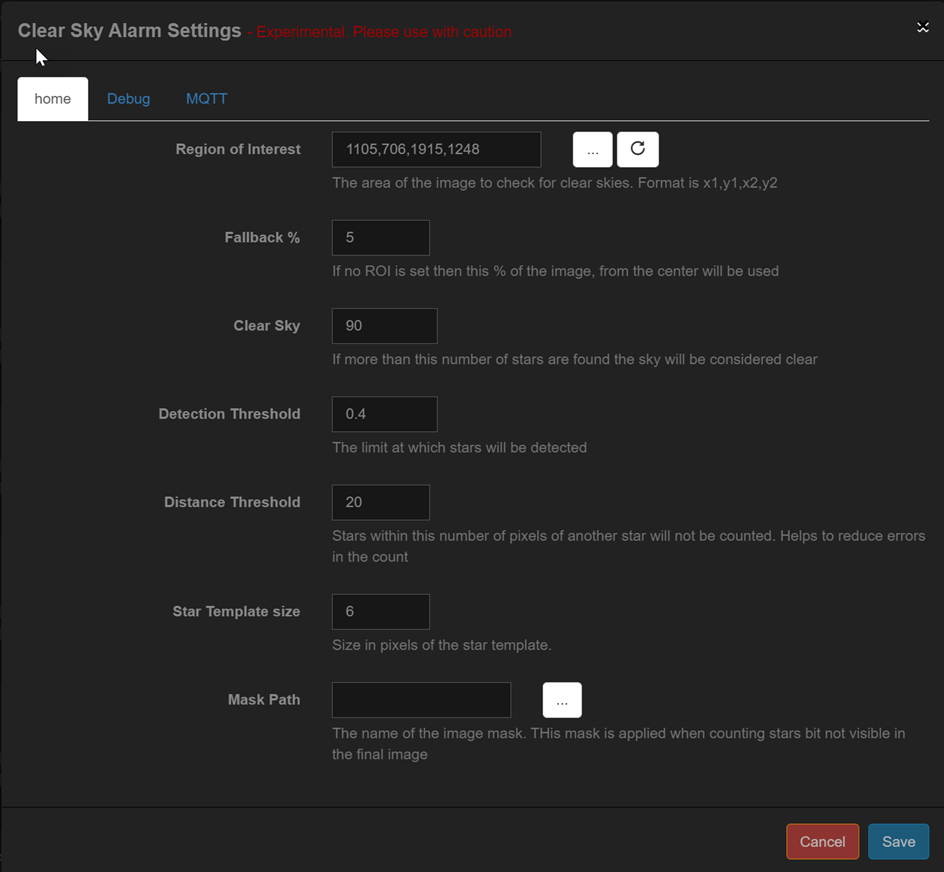 |
|
|
| 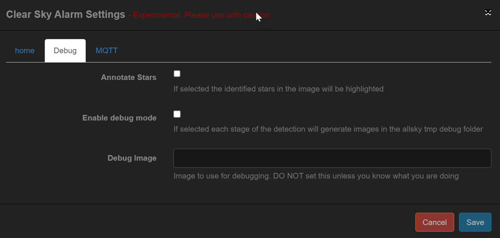 |
These options are for debugging and should not be used for normal operation
|
|
| 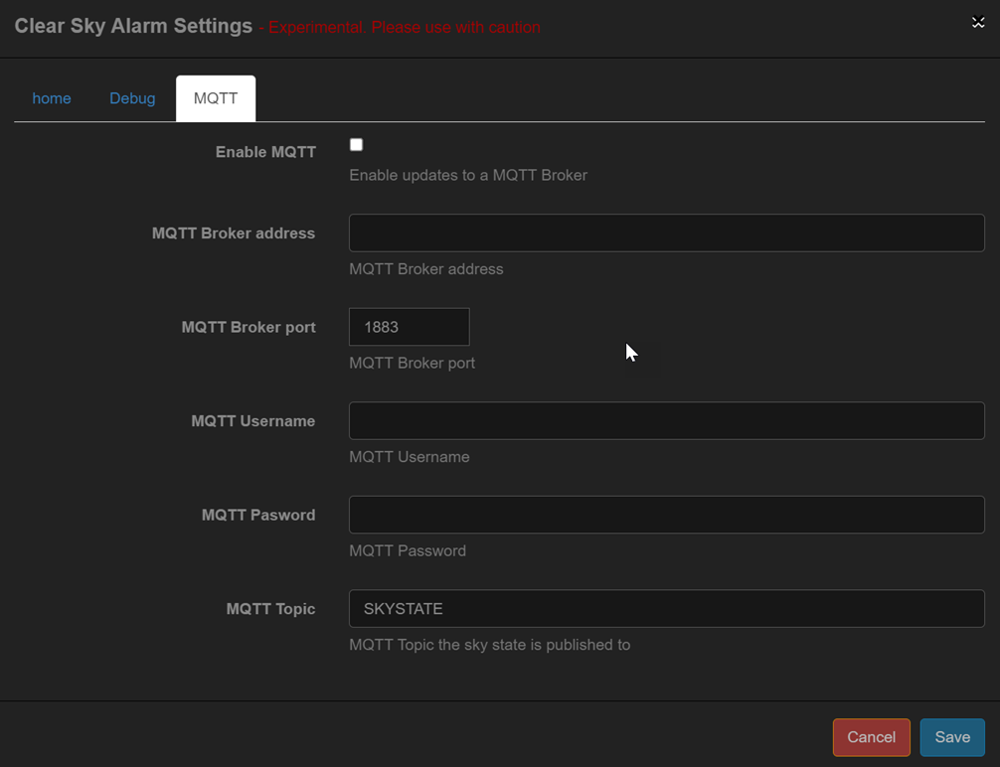 |
This is an advanced option and requires a MQTT broker. The setup and operation of a broker is beyond the scope of this document
|
|
| Star Count |
|
This counts stars in the captures AllSky Image |
| 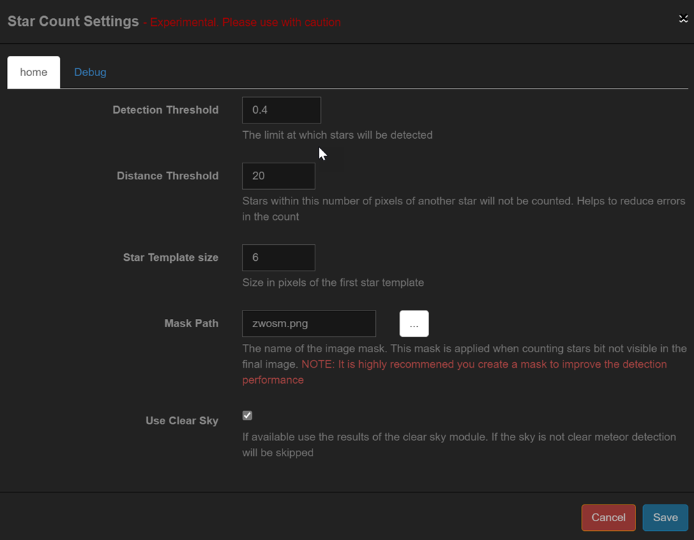 |
|
|
| 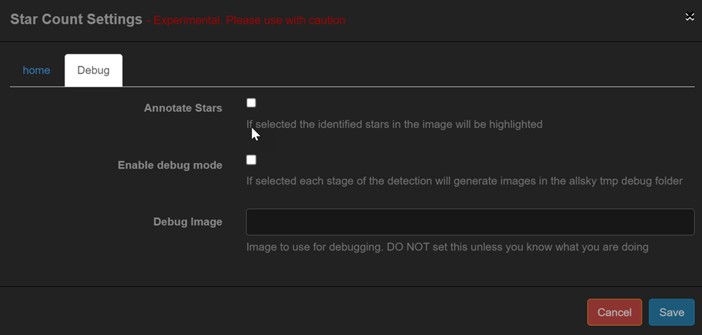 |
These options are for debugging and should not be used for normal operation
|
|
| Meteor Detection |
|
This attempts to detect any meteors in the image. The detection method looks for hard edged in the images and thus is susceptible to false positives if the image is not masked |
| 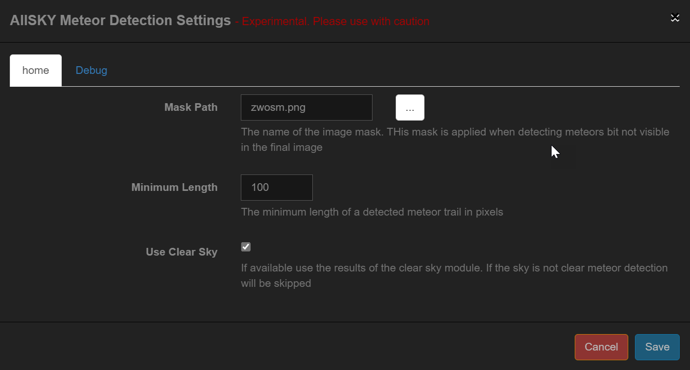 |
|
|
| 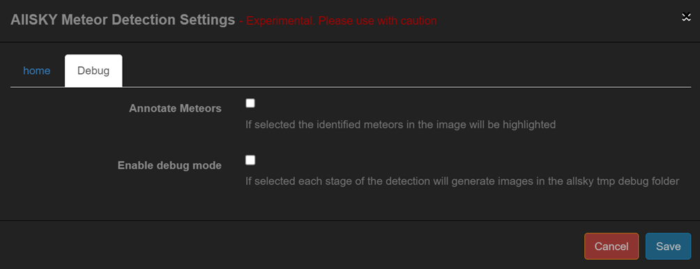 |
These options are for debugging and should not be used for normal operation
|
|
| Export |
|
Exports all internal AllSky variables to a json file. By default all environment variables prefixed with AS_ are exported but via the module options other AllSky avriables can also be made available. This can be used by external programs |
| 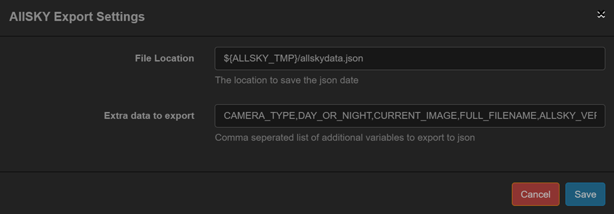 |
|
|
| Overlay |
|
Overlays data on the captured image. This module applies the fields defined in the 'Overlay Editor'. A full description of the editor is available in this documentation so is not covered here. |
| Script |
|
This allows a script to be run. This should only be used by users that understand how script are developer/run on Linux. Extreme care must be taken when using this module is it could cause the main AllSky software to stop operating |
| 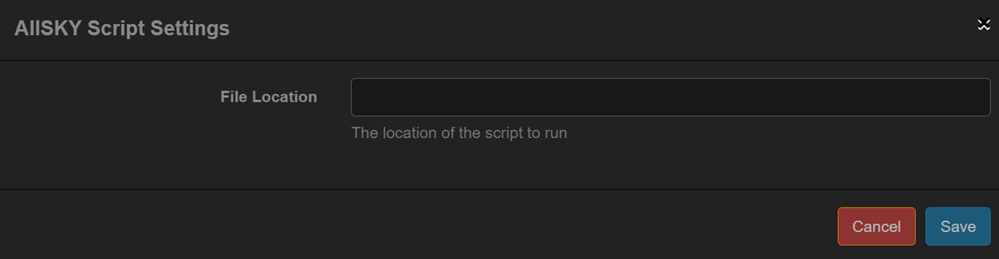 |
|
|
| Save Details |
|
TBC if we are going to use it |
User Modules
The User Modules are installed from a seperate GitHub repository and not included with the main AllSky installation
| Module | Available In | Description |
|---|---|---|
| Cloud Cover |
|
This is an advanced module and requires external hardware for its operation This module use an MLX90614 to determine the cloud cover. The MLX90614 is a non contact Infra Red thermometer. It is used to measure the temperature of the sky and compare it to the ambient temperature. Gnerally the difference between the Sky temperature and ambient can be used to determine the amount of cloud. The exact theory for the calculatios is beyond the scope of this documentation One of the big issues with using any for of sky temperature measurement is the sensor and water/snow ! If the sensor gets wet/covered then the readings will be useless. The best way to mounts the sensor is in a protective enclosure with the sensor mounted at 90 degress to the sky and some form of reflective device used to reflect the sky at the sensor Two different methods are available for determining the cloud cover
|
| 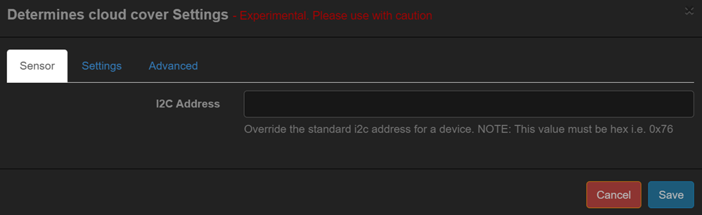 |
|
|
| 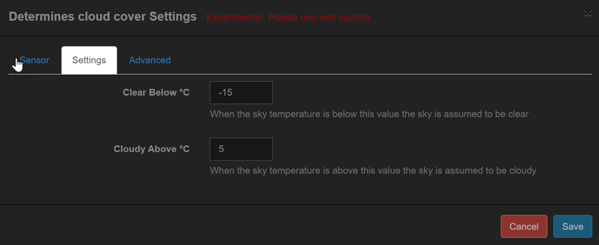 |
Between the two above temperatures the sky is assumed to be aprtially cloudy |
|
| 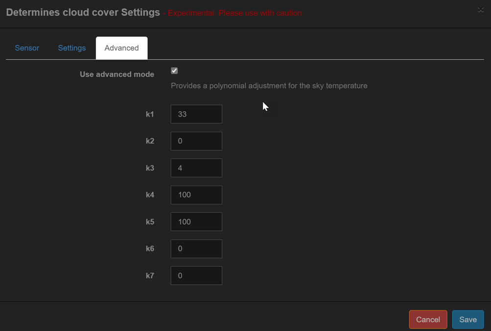 |
|
|